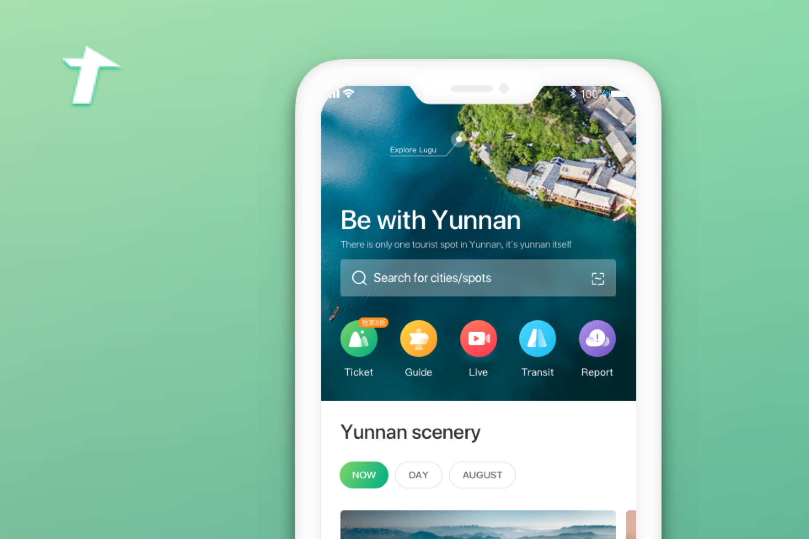

Go-Yunnan Redesign

Overview
Yunnan is a province whose economy feeds on tourism, so improving tourists' experiences is a constant endeavor. Yunnan tourism office recruited a team to create the mobile app Go-Yunnan — but the app didn't achieve good stats. Tencent was commissioned to redesign it. Over 4 months, I worked with my mentor, 1 other interaction designer, 2 visual designers, PMs, and engineers from the client's side to ship the redesigned experience. As the project progressed, we pushed the scope further to achieve more user and business value at a strategic level.

My contribution

Results

Understanding Go-Yunnan
We first spent time to understand what Go-Yunnan had to offer by talking with the client and PMs. We synthesized our findings with a SWOT analysis.


Identifying problems from users and data
We sent out a survey to internal users and got 85 responses. We arranged an 8-person focus group to dig deeper. I also asked developers for event tracking data from one month of Go-Yunnan usage to find where users were dropping off.

Understanding tourists with researchers
I found that researchers on my team had done a project investigating tourists, so I asked my mentor to set up a workshop to leverage existing research insights. From the researcher, we learned common pain points across 6 personas and a shared mental model.

Exploring information architecture
I printed out all the key interfaces in the Go-Yunnan app and invited designers and PMs to group them into common themes together. We regrouped sections and revamped the original information architecture.
After several rounds of feedback sessions with clients, we reached agreement on a new structure combining hierarchy and flat navigation. We focused on the home screen redesign for this iteration.


Home screen redesign
Every online tourism platform has a home screen, so I did a competitive analysis to see how other products approach theirs. I mapped these home screens to a 2×2 matrix and discussed with the team to set our goal. My mentor and I finalized home screen design decisions after several whiteboarding sessions.

Proposing our decisions to managers and clients was easier than expected. Our clients made several further requests but agreed with the direction. We created a hi-fi prototype and started polishing the experience on that base.


Pushing it further — service design
When I requested log analysis from developers to showcase our impact, I found that although overall stats improved, CTR through each module was still low compared to offline salespoints. I recalled the journey map from early phases and found that physical touchpoints carried significant weight — and there were holes in the current holistic experience.
 Service blueprint
Service blueprint
I initiated a conversation with my mentor about a strategic service design plan taking a holistic approach to tourism in Yunnan — and found my mentor was thinking about the same thing. We worked together on a high-level strategic plan and proposed it to our manager, then to our client.
 High-level product strategies
High-level product strategies
Learning outcomes
Design? Strategy? Consultancy?
Where does the value of design lie when everyone is talking about user-centered? I realized the best way to ship a design has shifted from learning domain knowledge and designing ourselves, to evangelizing design thinking and methods to domain experts and co-creating with them.
Lines between roles
I expected clear divisions of responsibility, but was surprised by the blurry line between PMs, researchers, and designers. My mentor's idea inspired me: do whatever you're not banned from doing. That encouraged me to think thoroughly about the product at every stage rather than solely focusing on my part.
The bigger picture
I initially limited my vision to individual features. As the project proceeded, I realized that always having business value and strategy in mind is key to creating an implementable product with the greatest possible user value.
Want to go deeper? Email yannuli.design@gmail.com for a full project walkthrough.